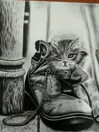
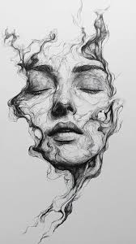

home
digital
paintings
🎨welcom Sketch Art Gallery🎨
Sketching began with prehistoric cave art around 30,000 years ago, evolving from a tool
for communication to a preparatory step for other artworks like frescoes and sculptures
during the Middle Ages and Renaissance. It became an independent art form in the 18th and
19th centuries as it grew in popularity for capturing memories before the invention of
photography, coinciding with the development of commercial art supplies like pencils and
watercolors
𓇢𓆸𓍯𓂃🖌Abstract Sketch𓇢𓆸𓍯𓂃🖌
Abstract sketch art is a non-representational style of drawing that uses visual language like
lines, shapes, and forms to express emotions or concepts independently of visual reality. It
focuses on elements such as color, line, shape, and texture, and can be highly intuitive, spontaneous,
and expressive. Unlike realistic art, abstract sketches often emphasize the essence of a subject through
simplification and artistic interpretation, rather than its accurate depiction
𓇢𓆸𓍯𓂃🖌Charcoal Sketch𓇢𓆸𓍯𓂃🖌

Charcoal sketch art is a drawing medium that uses charred sticks of wood or powdered charcoal to create images, prized for its
ability to produce rich blacks and soft gradations between light and shadow (chiaroscuro). It
is versatile, allowing for both bold, sweeping lines and fine details, and is ideal for preliminary
studies or finished works. Key techniques include using different types of charcoal like soft vine
(for sketching) and harder compressed charcoal (for dark accents), blending with tools like stumps or
fingers, and using erasers to lift charcoal for highlights
𓇢𓆸𓍯𓂃🖌surreal Sketch𓇢𓆸𓍯𓂃🖌

Surreal sketches are drawings inspired by the surrealist movement, which aims to express the unconscious mind and challenge
reality. They often feature dreamlike, illogical, and bizarre imagery created by combining
familiar objects in unexpected ways, juxtaposing unrelated elements, or manipulating scale.
Techniques like "automatism" (automatic drawing) can be used to bypass conscious control and
tap into the subconscious
© 2025 Digital Art Gallery | Created by Rutuja
ğŸ Back to Home